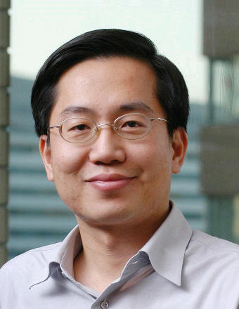

Industry Panel
Challenges in Middleware for Search
Commercial search engines utilize one of the largest computing infrastructure developed for any applications. The amount of data on the Web keeps growing and that means search infrastructure will need to grow further. Moreover, the amount of non-textual data is increasing more rapidly than the textual data. This will put further pressure on the infrastructure. To keep up with this demand in emerging search, middleware has to step up. This panel will discuss emerging issues in the middleware for search. Panelists will present their experience in scaling up the search infrastructure and will discuss how new challenges are being addressed.
Chair: Prof. Ramesh Jain (UC Irvine)
Ramesh Jain is an educator, researcher, and entrepreneur.
Ramesh is a pioneer in multimedia information systems, image databases,
machine vision, and intelligent systems. Currently he is the Donald Bren
Professor in Information & Computer Sciences at University of California,
Irvine. Before this he was a Farmer Distinguished Chair at Georgia Institute
of Technology. While professor of computer science and engineering at the
University of Michigan, Ann Arbor and the University of California, San Diego,
he founded and directed artificial intelligence and visual information systems
labs. Ramesh was also the founding Editor-in-Chief of IEEE Multimedia magazine
and serves on the editorial boards of several journals in multimedia,
information retrieval and image and vision processing. He has co-authored more
than 300 research papers in well-respected journals and conference
proceedings. He has co-authored and co-edited several books. He is a Fellow of
ACM, IEEE, AAAI, IAPR, and SPIE. He is the Chairman of ACM SIG Multimedia.
Ramesh co-founded three companies, managed them in initial stages, and then
turned them over to professional management. These companies were PRAJA in
event-based business activity monitoring (acquired by Tibco); Virage for media
management solutions and visual information management (a NASDAQ company
acquired by Autonomy); and ImageWare for surface modeling, reverse engineering
rapid prototyping, and inspection (acquired by SDRC). He recently co-founded
Seraja to address needs of emerging EventWeb.
Panelists:
Michael Parekh (Investor in Internet Companies)
Bio:
A Wall Streeter for over 20 years, former partner at
Goldman Sachs,
and founder of its Internet Research effort in 1994, Michael has been
living online since the early days of CompuServe in the 80s and AOL in
the '90s. Michael helped build the Internet Research effort at the firm, which
eventually comprised of many analysts covering major internet segments
around the world. Michael was the lead research analyst for the IPOs of
Internet
companies like UUNET, Yahoo!, eBay, DoubleClick, Webex, Real Networks,
Exodus amongst many other pioneering companies, as well as covering
companies like America Online and Netscape. He was an Institutional
Investor ranked analyst for several years. His focus spanned Internet sectors
from software, access, infrastructure, and wireless to online commerce and
content companies worldwide. He got his MBA at the University of North
Carolina at Chapel Hill in 1982, and BSc at Auburn University in 1980. He
joined Goldman Sachs & Co. in 1982. A native of India, Michael, aka Mukesh,
grew up in the middle east., coming to the US in 1977 for college. Michael
serves on various advisory boards of start-up internet companies. As an active
investor, he is focused on both private and public, technology-driven
opportunities.

Wei Ma (Microsoft Research)Bio:
Dr. Wei-Ying Ma is a Principal Researcher at
Microsoft Research. As a
Research Area Manager based in Beijing at Microsoft Research Asia, he
leads a team of talented, passionate researchers to advance the
state-of-the-art in Web search and data mining. Wei-Ying currently
serves on the editorial boards of both the ACM Transactions on
Information System (TOIS) and ACM/Springer Multimedia Systems Journal.
He is the program co-chair of the 17th International World Wide Web
Conference (WWW2008), program co-chair of the Pacific Rim Conference
on Multimedia (PCM) 2007, and general co-chair of the Asia Information
Retrieval Symposium (AIRS) 2008. He was general co-chair of the
International Multimedia Modeling (MMM) Conference 2005 and
International Conference on Image and Video Retrieval (CIVR) 2005. He
has served on the organizing and program committees of other
international conferences, including ACM Multimedia, SIGIR, CIKM, KDD,
and WWW, and has published more than 200 papers in
fields such as Web search, information retrieval, content-based image
retrieval, data mining, adaptive content delivery, and mobile
browsing. URL:
http://research.microsoft.com/users/wyma/
 Michael Ortega-binderberger (IBM)
Michael Ortega-binderberger (IBM)
Bio:
Michael Ortega Binderberger received his B.Eng.
degree in Computer
Engineering from the Instituto Tecnologico Autonomo de Mexico (ITAM),
Mexico in 1994, and M.S. and Ph.D. degrees in Computer Science from the
University of Illinois at Urbana Champaign in 1999 and 2003. He has been a
visiting researcher at the University of California, Irvine and is
currently an Advisory Software Engineer at IBMs Silicon Valley Lab. While
at IBM, he has been working on data discovery and integration middleware,
including data access, security, and consistency. His interests include
multimedia databases, information retrieval, decision support systems,
content management, data mining, highly available and reliable computing,
and information security. He is the recipient of a Fulbright scholarship
and an IBM student fellowship. He is a member of the ACM, IEEE, and IEEE
Computer Society.
Daniel Jiang (Founder and CEO, NuiStars Inc.)
Bio:
Daniel founded NuiStars in October 2007, which is a
social network
integrated with local content. Daniel has over 10 years experience in
the software industry focusing on distributed systems, API design, and
infrastructure. Before founding NuiStars, Daniel worked on multiple
projects at Google, including Enterprise Search, Google Base,
Structured Search, and Radio Ads. Before Google, Daniel worked in the
Windows Core Platform Division at Microsoft. Before Microsoft, Daniel
work on Jini and RMI, a platform for distributed computing in Java, at
Sun Microsystems. Daniel received a MS in Electrical Engineering and
Computer Science from MIT.
Sponsors:
 |
|
 |
|
 |
|
 |
|
 |
|